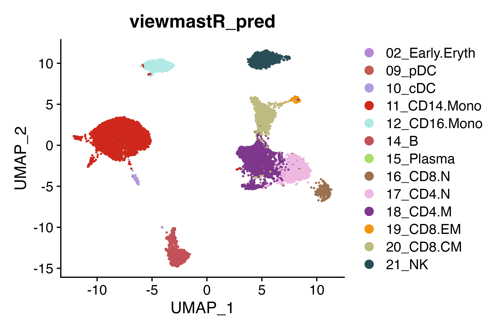
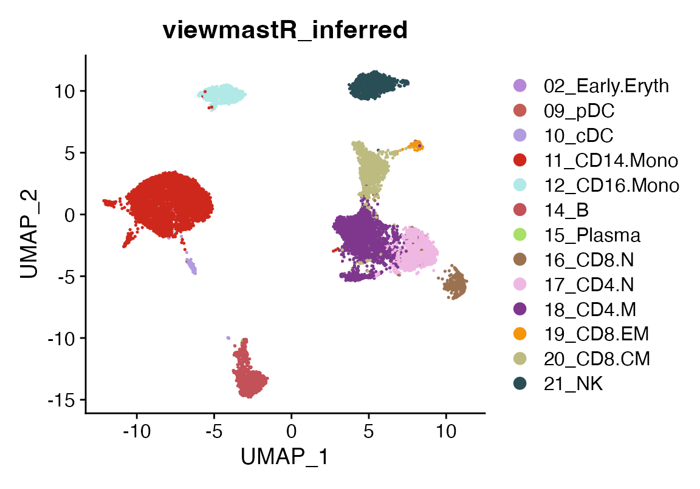
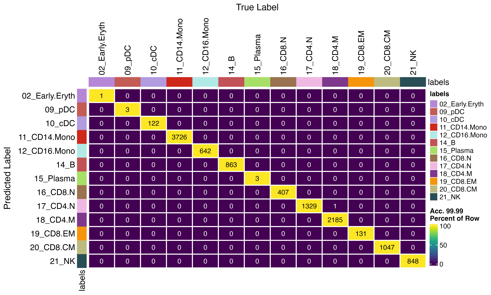

How to use viewmastR with saved models
2024-02-14
SavedModel.RmdInstalling Rust
First you need to have an updated Rust installation. Go to this site to learn how to install Rust.
Installing viewmastR
You will need to have the devtools package installed…
devtools::install_github("furlan-lab/viewmastR")Now you run viewmastR
The model path is specified using the ‘dir’ argument
seu<-viewmastR(seu, seur, ref_celldata_col = "SFClassification", selected_features = vg, model_dir = "/tmp/sc_local", max_epochs = 3, return_probs = T)A look at the predictions
DimPlot(seu, group.by = "viewmastR_pred", cols = seur@misc$colors)
Run inference
We can use the function viewmastR_infer to run inference a saved model. We will need to pass the same vector of variable features we used to initially create the model. We can use query_celldata_col to specify the name of the metadata column in the returned object. An optional vector of labels can be provided. Additionally, instead of returning the input object with predictions added, you may instead return the probabilities using the return_probs argument.
seu_infer <- viewmastR_infer(seu, model_dir = "/tmp/sc_local", vg,
labels = levels(factor(seur$SFClassification)),
return_probs = TRUE)
DimPlot(seu_infer, group.by = "viewmastR_inferred", cols = seur@misc$colors)
Comparing training-time vs saved-model inference
When comparing predictions from viewmastR (training with simultaneous query inference) to viewmastR_infer (inference using a saved model), you may observe a small number of cells (~0.05%) with different classifications. These differences arise from minor numerical variations between the two computation paths.
Importantly, the disagreements occur exclusively for cells at classification boundaries—cases where the model assigns similar probabilities to multiple cell types. As shown below, the disagreeing cells typically have two or more competing classes with probabilities within a few percentage points of each other, indicating genuine ambiguity where either classification is reasonable.
confusion_matrix(pred = factor(seu_infer$viewmastR_inferred), gt = factor(seu$viewmastR_pred), cols = seur@misc$colors)
disagree_idx <- which(seu$viewmastR_pred != seu_infer$viewmastR_inferred)
# Show what changed
disagree_df <- data.frame(
cell = colnames(seu)[disagree_idx],
viewmastR_pred = seu$viewmastR_pred[disagree_idx],
viewmastR_inferred = seu_infer$viewmastR_inferred[disagree_idx]
)
print(disagree_df)## cell viewmastR_pred viewmastR_inferred
## CACACCTTCATAACCG-1 CACACCTTCATAACCG-1 18_CD4.M 17_CD4.N
prob_cols <- colnames(seu@meta.data)[grep("prob", colnames(seu@meta.data))]
# For disagreeing cells, compare probabilities
if (length(disagree_idx) > 0) {
probs_direct <- as.matrix(seu@meta.data[disagree_idx, prob_cols, drop = FALSE])
probs_inferred <- as.matrix(seu_infer@meta.data[disagree_idx, prob_cols, drop = FALSE])
# Calculate difference
prob_diff <- probs_direct - probs_inferred
# Show summary of absolute differences
cat("\nAbsolute probability differences (disagreeing cells):\n")
print(summary(as.vector(abs(prob_diff))))
# For each disagreeing cell, show the two predictions and their probs
disagree_df <- data.frame(
cell = colnames(seu)[disagree_idx],
pred_direct = seu$viewmastR_pred[disagree_idx],
pred_inferred = seu_infer$viewmastR_inferred[disagree_idx],
prob_direct = apply(probs_direct, 1, max),
prob_inferred = apply(probs_inferred, 1, max),
max_prob_diff = apply(abs(prob_diff), 1, max)
)
print(disagree_df)
# Show the actual probabilities for the two competing classes
for (i in seq_len(nrow(disagree_df))) {
cell_idx <- disagree_idx[i]
class_direct <- as.character(disagree_df$pred_direct[i])
class_inferred <- as.character(disagree_df$pred_inferred[i])
col_direct <- paste0("prob_", class_direct)
col_inferred <- paste0("prob_", class_inferred)
cat(sprintf("\nCell %s:\n", disagree_df$cell[i]))
cat(sprintf(" Direct: %s = %.6f, %s = %.6f\n",
class_direct, seu@meta.data[cell_idx, col_direct],
class_inferred, seu@meta.data[cell_idx, col_inferred]))
cat(sprintf(" Inferred: %s = %.6f, %s = %.6f\n",
class_direct, seu_infer@meta.data[cell_idx, col_direct],
class_inferred, seu_infer@meta.data[cell_idx, col_inferred]))
}
}##
## Absolute probability differences (disagreeing cells):
## Min. 1st Qu. Median Mean 3rd Qu. Max.
## 1.324e-05 1.179e-04 2.310e-04 6.432e-03 6.525e-04 6.754e-02
## cell pred_direct pred_inferred prob_direct
## CACACCTTCATAACCG-1 CACACCTTCATAACCG-1 18_CD4.M 17_CD4.N 0.5258426
## prob_inferred max_prob_diff
## CACACCTTCATAACCG-1 0.460326 0.06753648
##
## Cell CACACCTTCATAACCG-1:
## Direct: 18_CD4.M = 0.525843, 17_CD4.N = 0.442731
## Inferred: 18_CD4.M = 0.458306, 17_CD4.N = 0.460326Appendix
## R version 4.4.3 (2025-02-28)
## Platform: aarch64-apple-darwin20
## Running under: macOS Sequoia 15.7.3
##
## Matrix products: default
## BLAS: /Library/Frameworks/R.framework/Versions/4.4-arm64/Resources/lib/libRblas.0.dylib
## LAPACK: /Library/Frameworks/R.framework/Versions/4.4-arm64/Resources/lib/libRlapack.dylib; LAPACK version 3.12.0
##
## locale:
## [1] en_US.UTF-8/en_US.UTF-8/en_US.UTF-8/C/en_US.UTF-8/en_US.UTF-8
##
## time zone: America/Los_Angeles
## tzcode source: internal
##
## attached base packages:
## [1] stats graphics grDevices utils datasets methods base
##
## other attached packages:
## [1] ggplot2_4.0.1 Seurat_5.4.0 SeuratObject_5.3.0 sp_2.2-0
## [5] viewmastR_0.5.0
##
## loaded via a namespace (and not attached):
## [1] fs_1.6.6 matrixStats_1.5.0
## [3] spatstat.sparse_3.1-0 RcppMsgPack_0.2.4
## [5] lubridate_1.9.4 httr_1.4.7
## [7] RColorBrewer_1.1-3 doParallel_1.0.17
## [9] tools_4.4.3 sctransform_0.4.3
## [11] backports_1.5.0 R6_2.6.1
## [13] lazyeval_0.2.2 uwot_0.2.4
## [15] GetoptLong_1.0.5 withr_3.0.2
## [17] gridExtra_2.3 scCustomize_3.2.4
## [19] progressr_0.18.0 cli_3.6.5
## [21] Biobase_2.66.0 textshaping_1.0.4
## [23] Cairo_1.7-0 spatstat.explore_3.7-0
## [25] fastDummies_1.7.5 labeling_0.4.3
## [27] sass_0.4.10 S7_0.2.1
## [29] spatstat.data_3.1-9 proxy_0.4-29
## [31] ggridges_0.5.7 pbapply_1.7-4
## [33] pkgdown_2.2.0 systemfonts_1.3.1
## [35] foreign_0.8-90 R.utils_2.13.0
## [37] dichromat_2.0-0.1 parallelly_1.46.1
## [39] mcprogress_0.1.1 rstudioapi_0.18.0
## [41] generics_0.1.4 shape_1.4.6.1
## [43] ica_1.0-3 spatstat.random_3.4-4
## [45] dplyr_1.1.4 Matrix_1.7-3
## [47] ggbeeswarm_0.7.3 S4Vectors_0.44.0
## [49] abind_1.4-8 R.methodsS3_1.8.2
## [51] lifecycle_1.0.5 yaml_2.3.12
## [53] snakecase_0.11.1 SummarizedExperiment_1.36.0
## [55] recipes_1.3.1 SparseArray_1.6.2
## [57] Rtsne_0.17 paletteer_1.7.0
## [59] grid_4.4.3 promises_1.5.0
## [61] crayon_1.5.3 miniUI_0.1.2
## [63] lattice_0.22-7 cowplot_1.2.0
## [65] magick_2.9.0 pillar_1.11.1
## [67] knitr_1.51 ComplexHeatmap_2.22.0
## [69] GenomicRanges_1.58.0 rjson_0.2.23
## [71] boot_1.3-31 future.apply_1.20.1
## [73] codetools_0.2-20 glue_1.8.0
## [75] spatstat.univar_3.1-6 data.table_1.18.0
## [77] vctrs_0.7.1 png_0.1-8
## [79] spam_2.11-3 Rdpack_2.6.4
## [81] gtable_0.3.6 rematch2_2.1.2
## [83] assertthat_0.2.1 cachem_1.1.0
## [85] gower_1.0.2 xfun_0.56
## [87] rbibutils_2.3 S4Arrays_1.6.0
## [89] mime_0.13 prodlim_2025.04.28
## [91] reformulas_0.4.0 survival_3.8-3
## [93] timeDate_4051.111 SingleCellExperiment_1.28.1
## [95] iterators_1.0.14 pbmcapply_1.5.1
## [97] hardhat_1.4.2 lava_1.8.2
## [99] fitdistrplus_1.2-6 ROCR_1.0-12
## [101] ipred_0.9-15 nlme_3.1-168
## [103] RcppAnnoy_0.0.23 GenomeInfoDb_1.42.3
## [105] bslib_0.9.0 irlba_2.3.5.1
## [107] vipor_0.4.7 KernSmooth_2.23-26
## [109] otel_0.2.0 rpart_4.1.24
## [111] colorspace_2.1-2 BiocGenerics_0.52.0
## [113] Hmisc_5.2-5 nnet_7.3-20
## [115] ggrastr_1.0.2 tidyselect_1.2.1
## [117] compiler_4.4.3 htmlTable_2.4.3
## [119] desc_1.4.3 DelayedArray_0.32.0
## [121] plotly_4.12.0 checkmate_2.3.3
## [123] scales_1.4.0 lmtest_0.9-40
## [125] stringr_1.6.0 digest_0.6.39
## [127] goftest_1.2-3 spatstat.utils_3.2-1
## [129] minqa_1.2.8 rmarkdown_2.30
## [131] XVector_0.46.0 htmltools_0.5.9
## [133] pkgconfig_2.0.3 base64enc_0.1-3
## [135] lme4_1.1-37 sparseMatrixStats_1.18.0
## [137] MatrixGenerics_1.18.1 fastmap_1.2.0
## [139] rlang_1.1.7 GlobalOptions_0.1.3
## [141] htmlwidgets_1.6.4 UCSC.utils_1.2.0
## [143] shiny_1.12.1 DelayedMatrixStats_1.28.1
## [145] farver_2.1.2 jquerylib_0.1.4
## [147] zoo_1.8-15 jsonlite_2.0.0
## [149] ModelMetrics_1.2.2.2 R.oo_1.27.0
## [151] magrittr_2.0.4 Formula_1.2-5
## [153] GenomeInfoDbData_1.2.13 dotCall64_1.2
## [155] patchwork_1.3.2 Rcpp_1.1.1
## [157] reticulate_1.44.1 stringi_1.8.7
## [159] pROC_1.19.0.1 zlibbioc_1.52.0
## [161] MASS_7.3-65 plyr_1.8.9
## [163] parallel_4.4.3 listenv_0.10.0
## [165] ggrepel_0.9.6 forcats_1.0.1
## [167] deldir_2.0-4 splines_4.4.3
## [169] tensor_1.5.1 circlize_0.4.17
## [171] igraph_2.2.1 spatstat.geom_3.7-0
## [173] RcppHNSW_0.6.0 reshape2_1.4.5
## [175] stats4_4.4.3 evaluate_1.0.5
## [177] ggprism_1.0.7 nloptr_2.2.1
## [179] foreach_1.5.2 httpuv_1.6.16
## [181] RANN_2.6.2 tidyr_1.3.2
## [183] purrr_1.2.1 polyclip_1.10-7
## [185] future_1.69.0 clue_0.3-66
## [187] scattermore_1.2 janitor_2.2.1
## [189] xtable_1.8-4 monocle3_1.3.7
## [191] e1071_1.7-17 RSpectra_0.16-2
## [193] later_1.4.5 viridisLite_0.4.2
## [195] class_7.3-23 ragg_1.5.0
## [197] tibble_3.3.1 beeswarm_0.4.0
## [199] IRanges_2.40.1 cluster_2.1.8.1
## [201] timechange_0.3.0 globals_0.18.0
## [203] caret_7.0-1
getwd()## [1] "/Users/sfurlan/develop/viewmastR/vignettes"